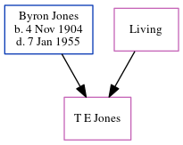

G W W Jones
[ Home ] | [ Calendar ] | [ Surnames Index ] | [ Errors ] | [ Family History ]The child of Byron Jones and Thelma Jacobson, They.
Parents
- Byron Moses was born on 4 Nov 1904
- Thelma Jane
Family Tree
Generated by ged2site. Last updated on Jul 3, 2024
Known Issues
unknown sex
Can't find relationship with the home person